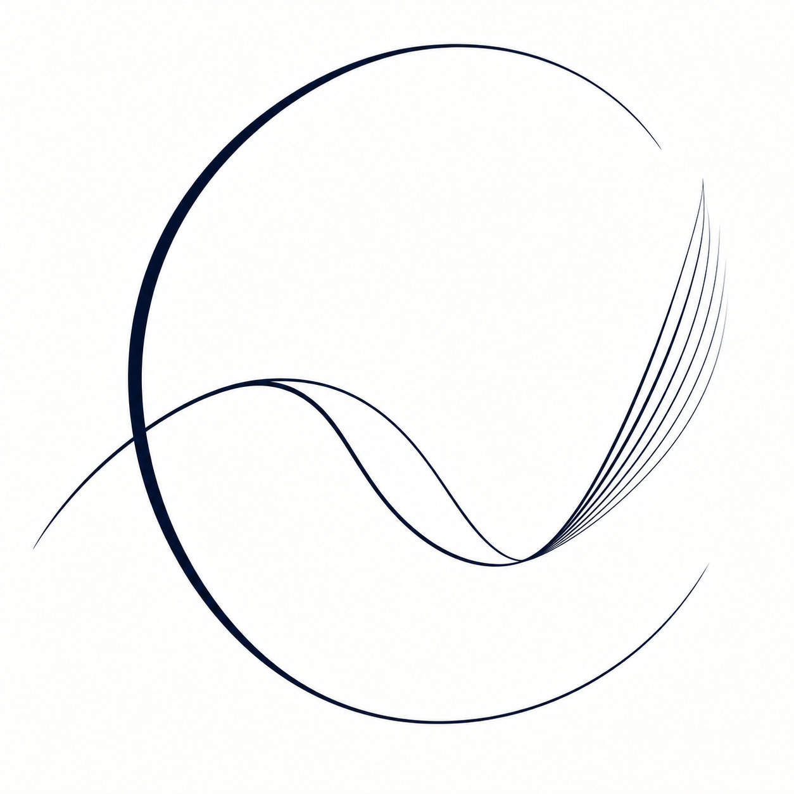
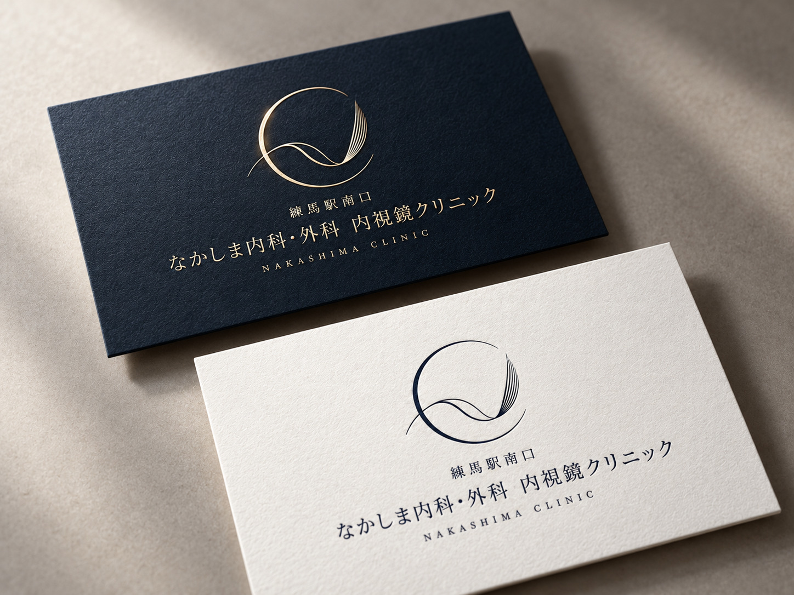
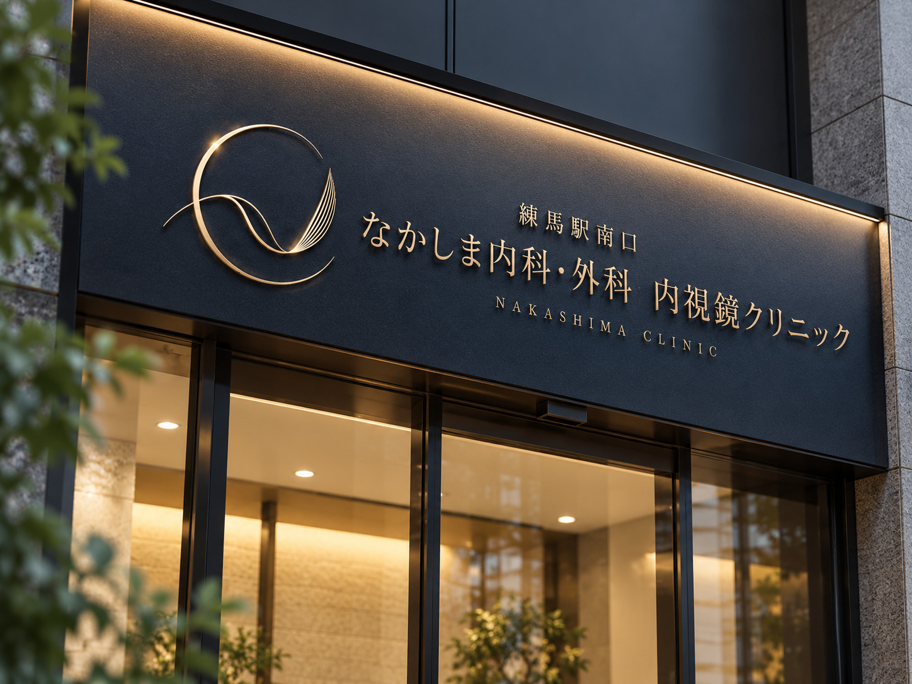

なかしま内科・外科 内視鏡クリニック
- 制作内容
- クリニックのロゴデザインと、名刺・サインへの展開イメージ
- デザインの方向性
- 信頼感と専門性を大切にしながら、親しみやすさも感じられるシンボルを目指しました。
- デザインコンセプト
- 頭文字の「N」を翼、「C」を殻に見立て、殻から抜け出して羽ばたく姿を曲線と重なりで抽象的に表現しました。線に強弱をつけ、しなやかな動きの中にも芯の強さが感じられるようにしています。
- カラー・展開
- 深いネイビーを基調に、落ち着きと清潔感を意識しました。ゴールドを用いたサインと、ネイビー・白の名刺に展開したイメージを掲載しています。


